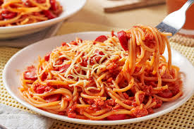

🍝 Spaghetti Recipe

Description
Spaghetti is a classic Italian pasta dish featuring long, thin noodles topped with a rich tomato-based sauce. It
is quick to prepare, satisfying, and perfect for lunch or dinner. This recipe brings together garlic, herbs, and
optional meat for a delicious traditional taste.
Ingredients
For the spaghetti:
- 400g spaghetti pasta
- Water for boiling
- Salt for pasta water
For the sauce:
- 2 tablespoons olive oil
- 3-4 garlic cloves, minced
- 1 medium onion, finely chopped
- 400g canned crushed tomatoes
- 2 tablespoons tomato paste
- 1 teaspoon sugar (optional, to balance acidity)
- 1 teaspoon dried oregano
- 1 teaspoon dried basil
- Salt and pepper to taste
- Optional: 250g ground beef or chicken
For serving:
- Grated parmesan cheese
- Fresh basil or parsley (optional)
Instructions
-
Cook the spaghetti:
- Bring a large pot of salted water to a boil.
- Add spaghetti and cook according to package instructions until al dente.
- Drain and set aside. Reserve 1 cup of pasta water if needed for sauce.
-
Prepare the sauce:
- Heat olive oil in a pan.
- Add chopped onion and sauté until translucent.
- Add minced garlic and cook for 1 minute until fragrant.
- If using meat, add ground beef or chicken and cook until browned.
- Add tomato paste, stir well.
- Add crushed tomatoes, sugar, oregano, basil, salt, and pepper.
- Simmer on low heat for 15-20 minutes, stirring occasionally. Add reserved pasta water if sauce is
too thick.
-
Combine and serve:
- Add cooked spaghetti to the sauce and toss well to coat evenly.
- Serve hot, topped with grated parmesan cheese and fresh basil or parsley.
Serving Suggestion
Serve with garlic bread or a fresh green salad for a complete Italian meal.
home